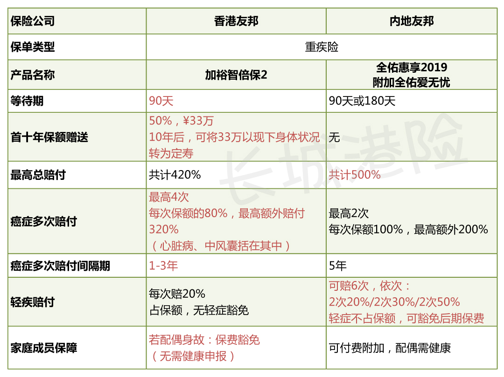

香港与内地友邦：加裕智倍保2对比全佑惠享2019

2019年不知觉已经过了三个月，不管内地或是香港，友邦两地的保险产品都先后有了一定的更新升级。香港友邦重疾险升级为：加裕智倍保2；内地友邦重疾险升级为：全佑惠享2019。对于关注两地重疾险却又无法下手的朋友们，今天就拿这两款产品跟大家看看，哪一款产品，更适合你？全佑惠享不涵盖癌症多重赔付，为了让两款产品的口径更为贴近，我将附加全佑爱无忧进行对比。
会有朋友问，为什么都是友邦，还会有两地产品的区别？其实不只是友邦，即便是中国人寿，香港和内地相同口径的产品性价比也差天共地。会有差异，主要是因为香港是世界三大金融中心之一，也是全亚洲的金融中心，其经济体的开放、自由造就了香港保险市场的发达、强大的竞争力。与保险业最近几年才慢慢进入高速发展的中国相比，香港的保险业已经发展了近一个世纪之久，全球几乎所有的大型保险公司都有在香港开展业务。成熟的企业管理制度与先进的技术，会使公司的运营更有效率。同时，由于成熟市场上竞争更为激烈，很难形成一家独大的局面，因此产品的价格就更低。当然还逃不掉保险公司的运营成本，像企业税（中国25%、香港16.5%）、死差、利差、费差等都决定了两地保险的产品差异。
二、产品对比
1.保费对比
由于加裕智倍保2的升级，对男性和女性的费率增长比例有比较大的区别，在此以30岁的男性与女性为例，进行对比。
·年龄：30岁，性别：男/女，健康状态：健康、非吸烟，保额：66万人民币（汇率6.6）
小结：若单方面看保费，香港友邦会比内地友邦便宜许多，女性总缴保费便宜8万多，男性总缴保费便宜将近15万。除了保费，投保的朋友也要了解产品的保障、条款等信息，加裕智倍保2除了保费给了惊喜外，在其他方面是否也会更出众呢？下面我们看看两款产品的保障对比。
2.保额/身故赔偿对比
这部分就只拿上述30岁女性作出数据对比：
这个表格的数据主要想说明，有现金价值的重疾险，才能够一定程度的抗通胀。投保加裕智倍保2，若去到了七八十岁才患病，不敢确保一两百万够用，但绝对比永远的66万强得多。
若是幸运，无病无痛的活到了八九十岁，即便退保，那也是一笔可观的养老金，全佑惠享的最高退保价值也就在66万左右。
3.产品保障对比

①等待期：全佑惠享2019的等待期，若是轻症，等待期为90天，若是重疾，等待期为180天。加裕智倍保2不论病症，等待期皆为90天。
②首十年保额赠送：加裕智倍保2在首十年赠送50%保额，即在前10年保额为¥99万，到赠送期最后一年，可申请将此部分赠送保额转为定期寿险，不需要再做任何健康申报。换言之，在10年后可以以你投保时的身体状况为自己增加一份定期寿险。
③癌症多次赔付：癌症不是不能治，而是需要钱。间隔期越短，领到赔偿金的几率越高。加裕智倍保2可将其中一次的癌症多次赔付等待期缩至一年，赔付40%的保额。在未来的医疗条件下，治愈率或生存率只会越来越高，但终究逃不过需要医疗费用的支持。加裕智倍保2癌症额外赔付最高达320%，全佑惠享最高达200%。另外，加裕智倍保2的多次赔付，涵盖了心脏病和中风。
无论是癌症、或是其他重疾的多次赔付，最重要的就是它们的间隔期、多次赔付的病项。要学会辨别“真多次赔付”与“假多次赔付”。多次赔付，针对同一个病项进行多次赔付，那才是大概率能够进行赔付；若是每次都只能赔付不同病项，那你想能够获得多重赔付的赔偿款怕是无望了。
④轻疾赔付：全佑惠享2019的轻症赔付不占保额、而且可以豁免主险后期保费，但附加的全佑爱无忧是无法豁免（大概每年¥3000），需正常缴付。轻症最高分六次赔付，但是每次赔付的必须是不同的病况。瞬间呼应了前面的“假多次赔付”了，但不占保额已经是几好了。
⑤家庭成员保障：加裕智倍保2的家庭成员保费豁免，包括受保人是儿童或成人。若受保人是儿童，其父母若身故，保费豁免。若受保人是成人，其配偶若身故，保费豁免。此项保障，被豁免的家庭成员都不需要进行健康告知。全佑惠享可以加费附加，但是被豁免的家庭成员必须健康。
4.疾病定义对比
在疾病定义这块，曾有人说过我不要太过于抠字眼。。。。。
我现在不抠，要等到理赔的时候被抠吗？真的是…..unbelievable
①良性脑肿瘤
加裕智倍保2：脑部或颅脑膜内的良性肿瘤，并产生显示颅内压增高的症状，例如：视神经乳头水肿、精神症状、癫痫及感觉障疑。良性脑肿瘤的存在必须由影响研究如电脑扫描（CT）或磁力共振（MRI）造影确定。
全佑惠享2019：在香港的界定之外，还须满足下列至少一项条件：1.实际实施了开颅进行的脑肿瘤完全切除或部分切除的手术；2.实际实施了对脑肿瘤进行的放射治疗。
加裕智倍保2定义有更多的除外责任，对脑肿瘤的涵盖范围更小；但没有对治疗手段进行约定，而只限定了符合疾病诊断即可，申请条件更为宽松。
②脑中风
加裕智倍保2：中风后持续最少4周的神经后遗症，及因而导致永久性神经机能缺损。
全佑惠享2019：要求在中风确诊180天后，仍遗留神经系统永久性的功能障碍。
加裕智倍保2“中风”定义明显较全佑惠享“脑中风后遗症”更为宽泛。
③终末期肾病
加裕智倍保2：两个肾脏的功能已出现慢性及不可逆转的末期衰竭情况，以致已开始进行定期之肾脏透析法或已接受肾脏移植手术。
全佑惠享2019：指双肾功能慢性不可逆性衰竭，达到尿毒症期，经诊断后已经进行了至少90天的规律性透析治疗或实施了肾脏移植手术。
加裕智倍保2定义在理赔时机方面更加宽泛，对肾透析没有90天的时间约定。
三、总结

重疾险，在用得上的时候绝对是你的救命稻草，至于这根稻草能被你揪多久，取决于你所选择的产品。上文所作出的对比，大家看完心里可能都有定论了。我最后再总结一下：
①看中保单能够抗通胀；
②看中低保费；
③担心首十年罹患重疾；
③夫妻投保、为孩子投保；
④在意癌症的等候期，在意心脏病、中风的多次赔付；
建议选择香港友邦加裕智倍保2。
①在意轻疾；
②看中轻疾理赔不占保额；
③看中轻疾可豁免保费；
建议选择内地友邦全佑惠享2019.

扫一扫关注微信公众号
咨询电话:0105151551
公司地址:上海浦东新区
备案号:0-1245187431
版权所属:上海市浦东新区